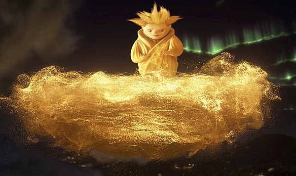

About Snadman
Sanderson Mansnoozie, or Sandman (Sandy), is the Guardian of Dreams and the first Guardian chosen by the Man in the Moon in Rise of the Guardians from a movie the Guardian of Dreams and the first Guardian chosen by the Man in the Moon in Rise of the Guardians. He is a small, golden, mute character who creates good dreams for children using Dreamsand. As the most powerful guardian, he represents peaceful sleep and is feared by Pitch Black.

Sandy
Sandman’s characteristics
- Manipulates yellow Dreamsand to form objects, weapons, or flying vehicles and can turn nightmares back into dreams.
- Communicates exclusively through silent, glowing imagery floating above his head.
- He was the first to realize Pitch Black's return, and he sacrificed himself in a battle against Pitch's nightmares before being resurrected by the children's belief.
- Gentle, kind, and artistic, but a fierce fighter when necessary.
- A short, stout, golden-colored being with sand-like hair styled into points.